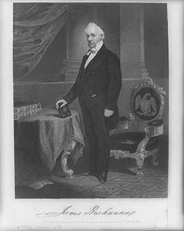

A veteran diplomat elected in 1856. He quietly pressed the Supreme Court toward the Dred Scott decision, backed Kansas's proslavery Lecompton constitution despite fraud in its adoption, and split his own party. The Panic of 1857 hit early in his term. When Southern states began seceding after Lincoln's election, he said secession was illegal but that the government had no power to stop it.
Shaded areas show the years in office, with a few years before and after for comparison. Budget years ran July to June until 1976 (now October to September), so each year's figures cover parts of two calendar years.
June 30, 1856 (end of fiscal 1856): $31.97 million → June 30, 1860 (end of fiscal 1860): $64.84 million
Daily debt figures don't exist before 1993, so Buchanan's numbers use the fiscal years closest to his term, the same rule as every other page.
Debt as a share of GDP. Above 100% means the debt is bigger than a year of everything the country produces.
Money borrowed each budget year (below the line) or paid down (above). The White House budget office's yearly figures begin in 1901.
No national estimates before 1890. Economist Stanley Lebergott's yearly estimates, the earliest national series, begin in 1890
How much prices rose each year (consumer price index).
What everyday prices and paychecks did while in office.
Prices use the consumer price index (MeasuringWorth). The minimum wage is the federal rate set by Congress.
16 orders. Count from the American Presidency Project.
Yearly counts aren't reliable for this era. Orders were not numbered until 1907, when the State Department numbered the ones already in its files, and many orders were never numbered at all, so only the total is shown.
Source: American Presidency Project: executive orders (full list of every order).
Most orders in this era were routine, such as setting aside public land or exempting jobs from civil service rules.
Incomplete: orders before 1929 were not numbered or collected consistently. This archive has 1 of the roughly 16 orders counted for this president.
Source: Executive Orders Archive, compiled from the American Presidency Project and the Federal Register. Topics are the archive's automated tags; "Revoked" and similar labels come from the Federal Register's records.
A pardon wipes out the punishment for a federal crime; a commutation shortens a sentence but leaves the conviction. The Justice Department's published counts begin in 1900.
The Justice Department's published clemency counts begin in fiscal 1900, so there are no reliable yearly totals for this presidency.
Source: U.S. Dept. of Justice, clemency statistics, which lists every recipient with the crime and sentence.
The crime: Sedition and treason for resisting federal authority in the Utah War
Sentence: None imposed
Why it drew attention: Offered in exchange for accepting federal rule, ending a standoff in which the Army had marched on Utah Territory.
SourceThe same checklist for every president. Tap a row for details and sources.
No articles were voted on. A House committee led by John Covode investigated his administration in 1860.
SourceNever charged.
Secretary of War John Floyd resigned in December 1860 and was indicted over missing Indian trust bonds; the charges were dropped.
SourceNone were appointed.
No official investigation found he used federal law enforcement against opponents. The Covode Committee's findings concerned patronage and bribery (see controversies).
What happened, what was proven, and how it ended.
Before taking office, Buchanan wrote to Justice Robert Grier urging him to join the Southern majority. In his inaugural address he told the country to accept the ruling, 'whatever it may be', while already knowing the outcome.
Outcome: The Court ruled that Black Americans could not be citizens and that Congress could not ban slavery in the territories; the letters became public later.
SourceBuchanan pushed Congress to admit Kansas as a slave state under a constitution written by a proslavery minority and adopted amid fraud.
Outcome: Congress refused; Kansas voters rejected it by a wide margin in 1858. The fight split the Democratic Party.
SourceA House investigation found his administration had used patronage, contracts and cash to win votes for the Lecompton constitution and in elections.
Outcome: No one was prosecuted; Republicans used the report in the 1860 campaign.
SourceBuchanan declared secession illegal but said the Constitution gave the federal government no power to force a state to stay. Seven states left the Union before he left office.
Outcome: Historians usually rank him among the worst presidents for his handling of the crisis.
SourceWidely quoted remarks, with the context they were said in.
The long-continued and intemperate interference of the Northern people with the question of slavery in the Southern States has at length produced its natural effects.
If you are as happy, my dear sir, on entering this house as I am on leaving it, you are the happiest man in this country.